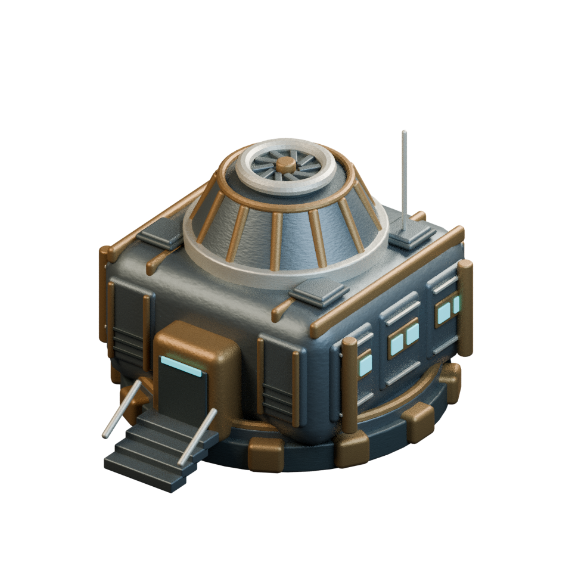
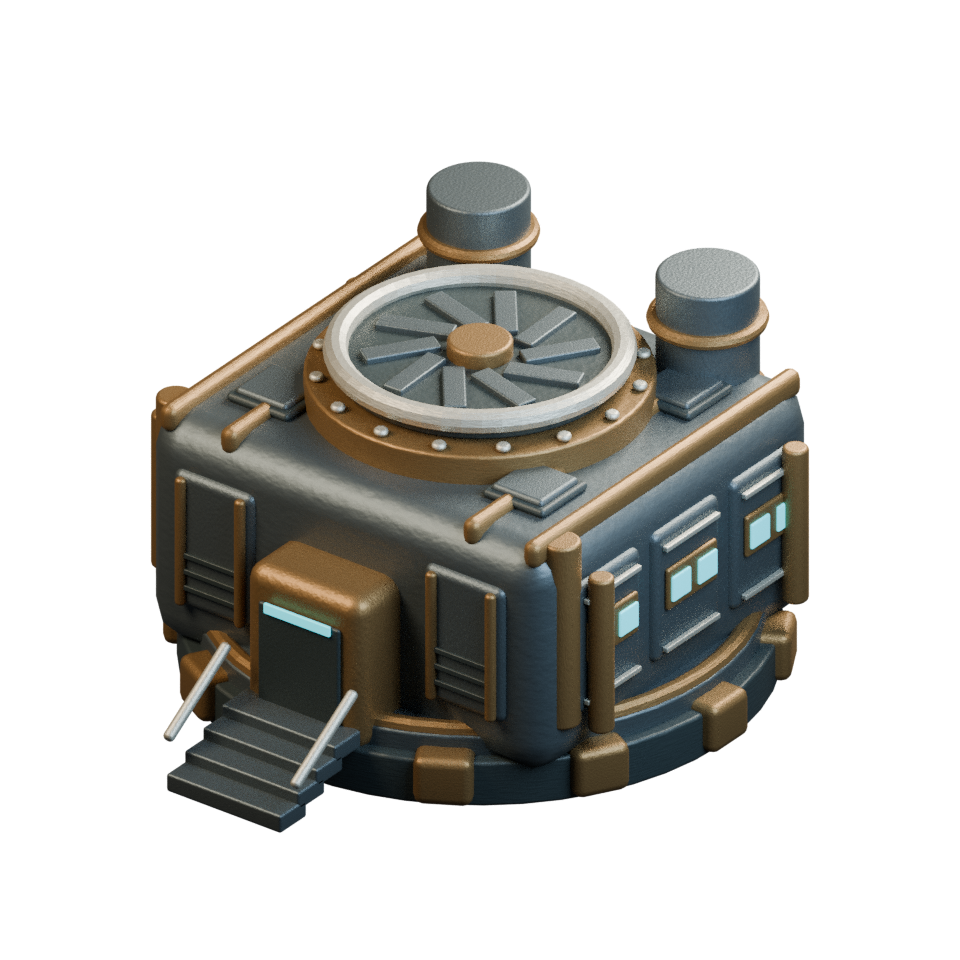
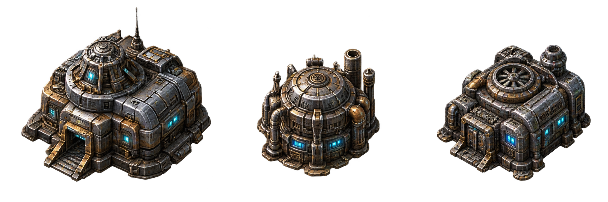

Abri
Une coque basse autour d’un dôme nervuré. Sas, vitrages et accès rapprochent le bâtiment de l’échelle de l’équipe.
UNE MÊME FAMILLE / HUIT FONCTIONS
Acier patiné, renforts bronze et lumière cyan.

Une coque basse autour d’un dôme nervuré. Sas, vitrages et accès rapprochent le bâtiment de l’échelle de l’équipe.

Une cuve ceinturée, deux échangeurs et une ventilation centrale. La silhouette cylindrique la distingue immédiatement.

Un atelier plus large, une grande turbine et des réservoirs arrière. La coque pourra accueillir plusieurs métiers.
Première proposition de géométrie, sans animation. Les vues sont des rendus des mêmes modèles sous trois angles. Les pièces restent séparées et modifiables dans Blender. Les proportions et les détails sont à valider avant de remplacer les bâtiments de l’atelier.

LA RÉFÉRENCE COMMUNE
Les modèles reprennent les dômes, les ceintures métalliques, les instruments circulaires et les fenêtres cyan de cette planche. Les faces cachées sont proposées ; l’usure peinte pourra être enrichie après validation des volumes.